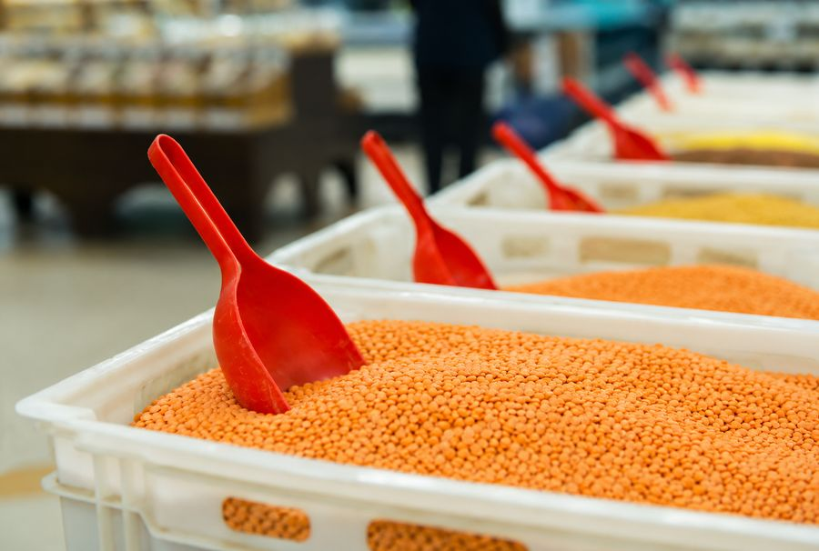
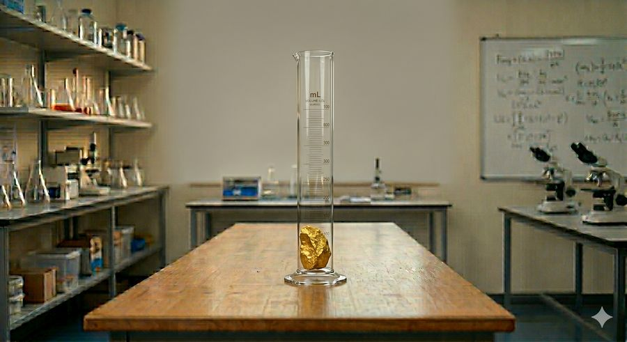
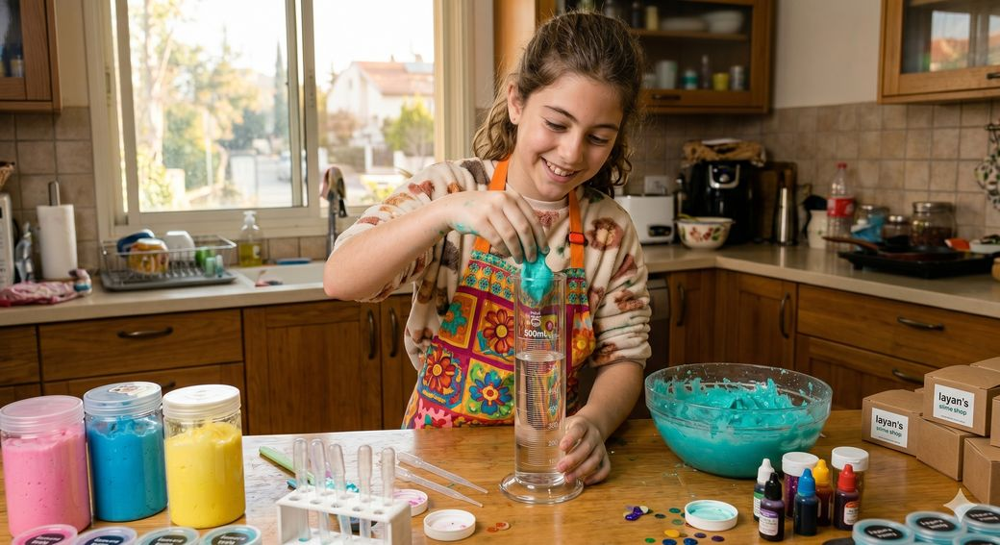
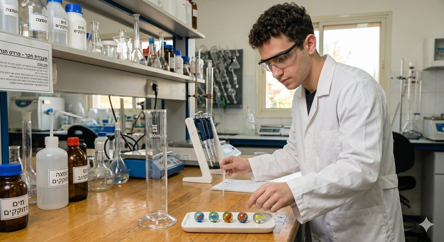

כמה שאלות מאתגרות שמשלבות את כל מה שלמדתם על מדידת נפח.
בשיעור מדעים יעל מילאה משורה במים עד 60 מ"ל. היא הכניסה פנימה טבעת כסף וראתה שפני המים עלו ל- 85 מ"ל.
היא טענה: "הניסוי לא מודד את נפח הטבעת, אלא רק את המים שעלו"
איך המורה למדעים יסביר ליעל שהניסוי מספק ראיה מדעית תקפה לנפח הטבעת?

במפעל אריזת עדשים כתומות רוצים לדעת כמה עדשים להכניס לכל שקית בנפח 500 מ"ל.
איך ניתן למדוד את נפח העדשים?

תומר מצא גוש זהב ומדד את הנפח שלו 5 פעמים.
אלה היו התוצאות שקיבל:
23 סמ"ק, 22 סמ"ק, 24 סמ"ק, 23 סמ"ק, 23 סמ"ק.
מה אפשר לומר על מהימנות המדידות?

ליאן מכינה סליים ומוכרת אותו בתוך קופסאות פלסטיק קטנות בנפח 20 סמ"ק כל אחת.
היא רוצה למדוד נפח של כל חתיכת סליים לפני שהיא מכניסה אותה לקופסה, אבל הסליים כל הזמן צף והמים במשורה לא עולים.
סעיף א:
איך ליאן יכולה להכניס את הסליים לתוך המים?
סעיף ב:
אחרי שהמשקולת והסליים שקעו במשורה ליאן קראה את הנפח שהתקבל.
איך היא תחשב את נפח הסליים לבדו?
אני יכול למדוד את הנפח של 5 הגולות ביחד!
גילי מתכנן מסלול מכשולים לגולות.
כדי לתכנן את אחד המעברים הוא צריך לדעת מה הנפח של גולה.
בגלל שהגולות מאוד קטנות הוא חושש שהמדידה שלו לא תהיה מספיק מדויקת.

סעיף א:
האם גילי צודק וניתן מבחינה מדעית למדוד 5 גולות ביחד כדי לדעת מה הנפח של אחת מהן?
סעיף ב:
גילי מדד ומצא שהנפח של כל הגולות ביחד הוא 50 סמ"ק.
מהו הנפח של גולה אחת בהנחה שכל הגולות זהות בגודלן?
סקרנים לדעת אם צדקתם?
בגלל שכל כך התקדמנו, נענה בלי רמזים ונדע אם צדקנו רק בסוף!
איזה מתח....
סעיף ג:
האם השיטה שגילי מודד בה את הגולות תעבוד גם עבור גולות בגדלים שונים?